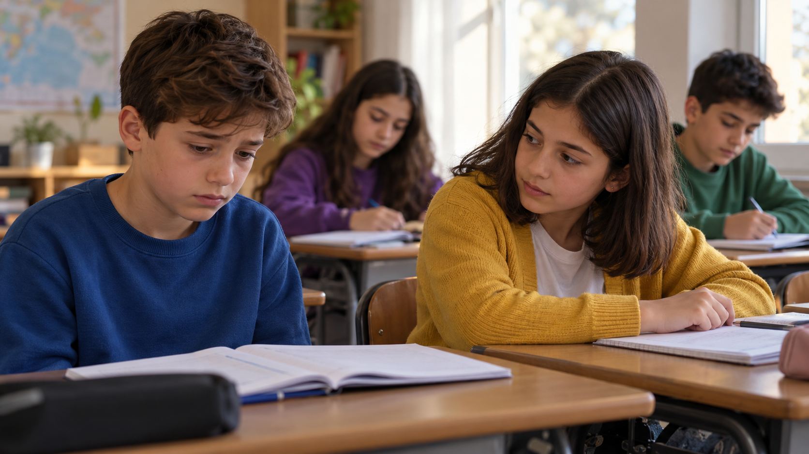
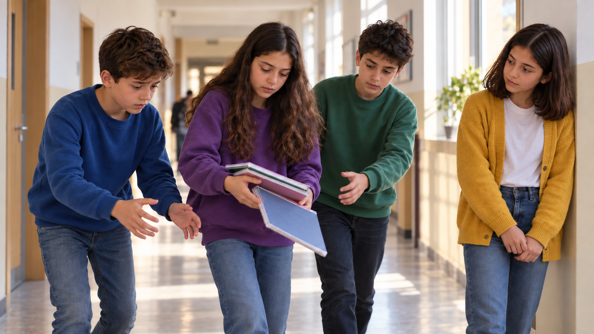
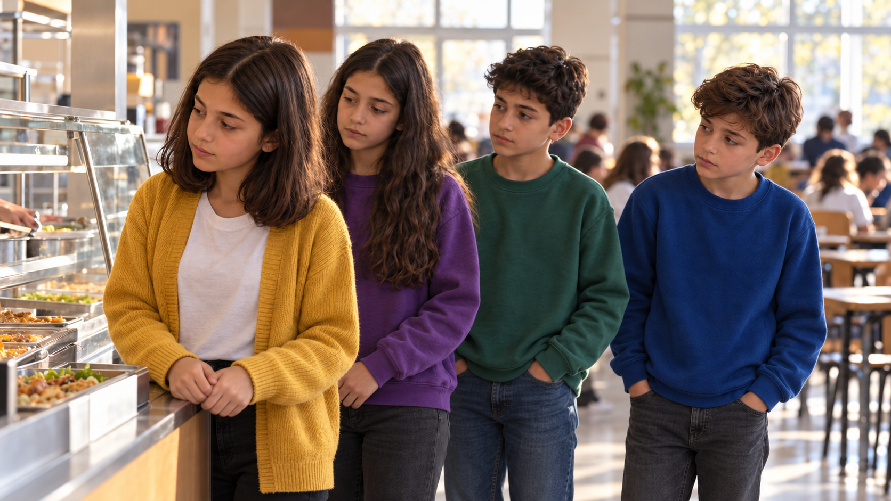
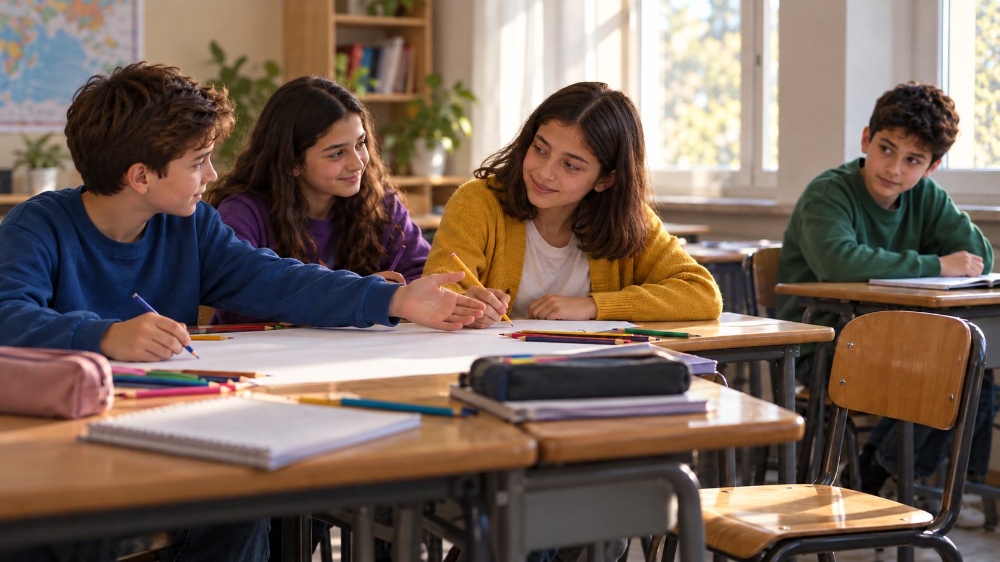

NEZAKETİ PAYLAŞAN
Umut ↗
Dinlendiğinde güç bulur. Gördüğü desteği arkadaşlarına taşır.
DuyarlılıkKÜÇÜK BİR DAVRANIŞ, BÜYÜK BİR ETKİ
Bir arkadaşını dinlemek. Sırada yer vermek. Birlikte olmak.
Dört arkadaşın küçük ama anlamlı hikâyesi.

NEZAKET BULAŞIR / KISA FİLMBazen sadece
“Yanındayım.” demek yeter.
01 / KAHRAMANLAR
Her birinin bu hikâyede bir yeri var.
Tıpkı hepimizin olduğu gibi.
Dinlendiğinde güç bulur. Gördüğü desteği arkadaşlarına taşır.
DuyarlılıkBir arkadaşının duygularını önemser. “Yanındayım” diyerek ilk adımı atar.
Empati
Yardımın değerini hisseder. Arkadaşlarına yer açar, elindekini paylaşır.
Paylaşmak
Gördüğü saygıya bir iyilikle karşılık verir. Birlikte olmanın parçasıdır.
Yardımlaşma02 / HİKÂYE
Umut, okurken kendisiyle alay edilmesine üzülür. Nida onu dinler ve birlikte öğretmenlerinden destek istemeyi önerir.
Bu küçük destek, günün geri kalanına yayılır. Kantinde birinin sırasına saygı göstermekle devam eder; koridorda yere düşen defterleri toplamakla büyür.
Sonunda dört arkadaş aynı masada buluşur. Çünkü nezaket, hepimize yer açar.
“Yanındayım. Birlikte öğretmenimize anlatalım.”— NidaHikâyeyi sahne sahne keşfet →
03 / SAHNE SAHNE
Fotoğraflar arasında ilerle.
Her sahnede bir nezaket bul.
Ok tuşlarıyla da ilerleyebilirsin.

04 / KISA FİLM
Dört arkadaşın nezaketle değişen günü.
63 saniyelik bir hatırlatma: birlikte daha güzel.
Video bağlantısı eklendiğinde buradan izleyebilirsin.
Bugün sen de birine
“Yanındayım.” de.